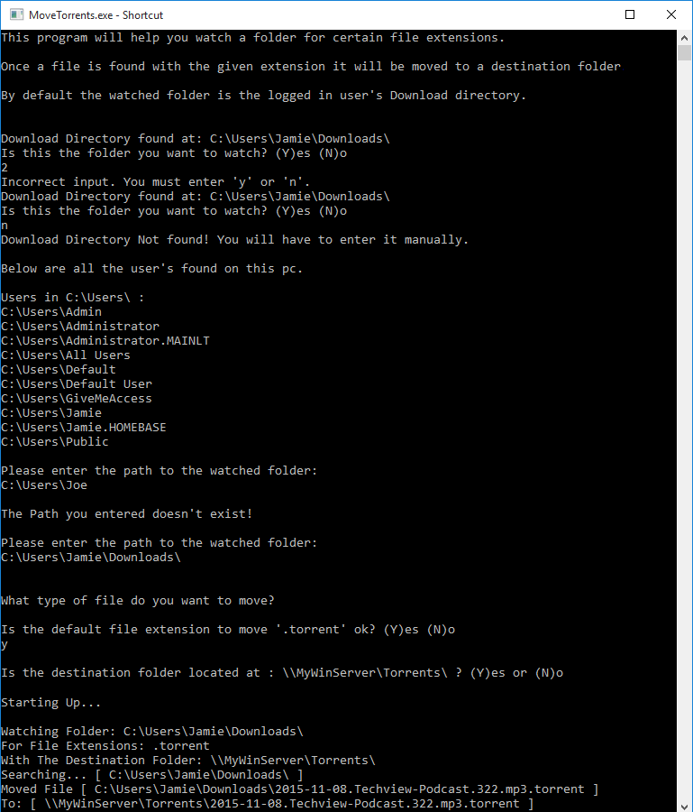

| Auto Move Files - C# Console App | Auto VPN - C# Console App |
|---|---|
|  |

|
|
Description: Made with simplicity in mind. The purpose of this project is to simply watch a folder for given file extensions, and move them to the given destination folder overwriting any files with the same name. |
Description: The objective of this project is to ensure my VPN connection stays connected, and to save energy while watching a movie on my laptop. It will briefly pause the full screen movie to alert me its fully charged and okay to unplug. Along with a message box alerting me when the battery is low as Windows will not interrupt my full screen movie to alert me. |
|
Repository: Auto Move Files on GitHub |
Repository: Auto VPN on GitHub |